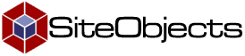
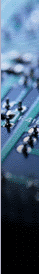

version: 2.1 Lite, build: 2.12.20020121
End-User Software License Agreement THIS PROGRAM IS PROTECTED BY COPYRIGHT LAW AND INTERNATIONAL TREATIES. BREAKING THE FOLLOWING AGREEMENT WILL RESULT IN SEVERE CIVIL AND CRIMINAL PENALTIES AND WILL BE PROSECUTED TO THE MAXIMUM EXTENT POSSIBLE UNDER LAW. The intent of this document is to state the conditions under which a Package may be copied, such that the Copyright Holder maintains some semblance of artistic control over the development of the package, while giving the users of the package the right to use and distribute the Package in a more-or-less customary fashion, plus the right to make reasonable modifications. Commercial Software THE PACKAGE SUBJECT TO THIS AGREEMENT IS COMMERCIAL SOFTWARE. IT IS NOT COVERED BY ANY OTHER WARRANTY CONTAINED IN ANY OTHER LICENSE AGREEMENT BETWEEN YOU AND SITEOBJECTS. Definitions: "Package" refers to the collection of files distributed by the Copyright Holder, and derivatives of that collection of files created through textual modification. "Standard Version" refers to such a Package if it has not been modified, or has been modified in accordance with the wishes of the Copyright Holder. "Copyright Holder" is whoever is named in the copyright or copyrights for the package. "You" is you, if you're thinking about copying or distributing this Package. "Freely Available" means that no fee is charged for the item itself, though there may be fees involved in handling the item. It also means that recipients of the item may redistribute it under the same conditions they received it. 1. You may make and give away verbatim copies of the source form of the Standard Version of this Package without restriction, provided that you duplicate all of the original copyright notices and associated disclaimers. 2. You may apply bug fixes, portability fixes and other modifications derived from the Copyright Holder. A Package modified in such a way shall still be considered the Standard Version. 3. You may otherwise modify your copy of this Package in any way, provided that you insert a prominent notice in each changed file stating how and when you changed that file, and provided that you do at least ONE of the following: a) allowing the Copyright Holder to include your modifications in the Standard Version of the Package. b) use the modified Package only within your corporation or organization. c) make other distribution arrangements with the Copyright Holder. 4. You may distribute the programs of this Package in object code, provided that you do at least ONE of the following: a) distribute a Standard Version of the library files, together with instructions (in the manual page or equivalent) on where to get the Standard Version. b) accompany the distribution with the machine-readable source of the Package with your modifications. c) accompany any non-standard files with their corresponding Standard Version files, giving the non-standard files non-standard names, and clearly documenting the differences in manual pages (or equivalent), together with instructions on where to get the Standard Version. d) make other distribution arrangements with the Copyright Holder. 5. You may not charge any copying fees for any distribution of this Package. You may charge any fee you choose for support of this Package. You may not charge a fee for this Package itself. However, you may distribute this Package in aggregate with other (possibly commercial) programs as part of a larger non-commercial software distribution provided that you do not advertise this Package as a product of your own. All commercial uses are subject to another license agreed upon between you and the Copyright Holder. 6. The scripts and library files supplied as input to or produced as output from the programs of this Package do not automatically fall under the copyright of this Package, but belong to whomever generated them, and may be sold commercially, and may be aggregated with this Package. 7. The name of the Copyright Holder may not be used to endorse or promote products derived from this software without specific prior written permission. 8. THIS PACKAGE IS PROVIDED "AS IS" AND WITHOUT ANY EXPRESS OR IMPLIED WARRANTIES, INCLUDING, WITHOUT LIMITATION, THE IMPLIED WARRANTIES OF MERCHANTIBILITY AND FITNESS FOR A PARTICULAR PURPOSE.
support:
http://forums.siteobjects.com/
© copyright 2002
SiteObjects Inc.